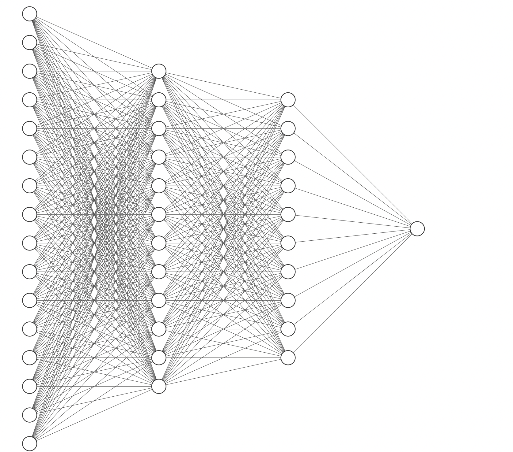
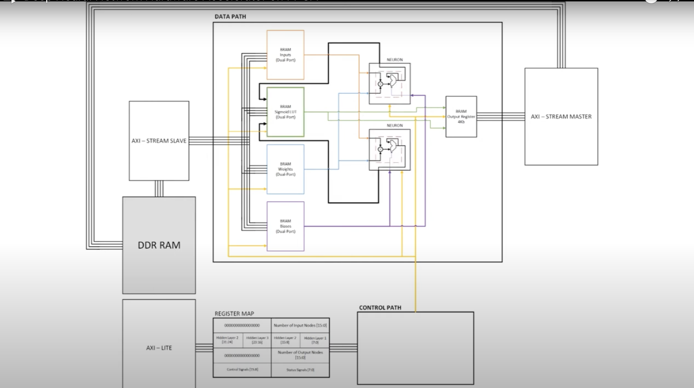

FPGA & ML Inference
Acceleration
Accelerating the inference of a basic neural network for the MNIST clothes data-set. I also managed to automate the synthesis of the neurons by changing a few constants.

This project focused on accelerating inference for the MNIST Fashion dataset on an FPGA by hardcoding artificial neurons. The MNIST Fashion dataset, a variant of the traditional MNIST dataset, contains images of clothing items in grayscale and is widely used for classification tasks. Implementing neural network inference directly in hardware provides significant speed advantages over CPU or GPU-based solutions, particularly for edge computing applications where low latency and energy efficiency are paramount.
Objectives
The goal was to design a custom neural network using Verilog, with each neuron hardcoded into the FPGA. This network would perform inference on the MNIST Fashion dataset, where images would be processed to classify one of ten clothing categories. Key components included implementing 16-bit floating-point arithmetic units (multipliers and adders) and using Look-Up Tables (LUTs) for activation functions.
Architecture

The core architecture revolved around neurons that performed weighted summation and activation for bias and the corresponding weights for each term. I then passed the result through an activation function to produce the final output. This activation function was either a ReLU, Tanh, or Sigmoid function, with the choice of function being configurable. Each neuron was connected to the next layer of neurons, forming a feedforward network. The activation function was implemented using LUTs, with the weights and biases hardcoded into the neurons. Finally, the output layer would produce a classification result based on the highest output value.
Key Modules
16-bit Floating Point Multiplier
The multiplier was IEEE 754 half-precision compliant with 1-bit sign, 5-bit exponent and 10-bit mantissa. My verilog implementation handled the necessary edge cases such as overflow and underflow.
Floating Point Adder
After multiplying the inputs by their corresponding weights, an adder summed up the results. The challenge in FPGA design was maintaining accuracy while keeping resource usage minimal. The adder module implemented normalization, aligning exponents before summing mantissas, and then re-normalizing the result.
Activation Functions using LUTs
Each neuron module connected to the LUT-based activation function. Depending on the layer, the appropriate activation function (ReLU, Sigmoid, or Tanh) was selected. The LUTs stored values for inputs to the degree of accuracy of the model.
AXI Communication Protocol
Implemented a simple AXI communication protocol to load and initialize the neurons as well as read back output from the NN.
Results

After synthesizing the design, I tested the neural network on the MNIST Fashion dataset. The network achieved an accuracy of 85% on the test set, which was comparable to software-based solutions. The FPGA-based inference was significantly faster than CPU-based inference, with a latency of 0.5ms per image. The design was also energy-efficient, consuming only 0.5W of power during operation.
Future Work
Future work will focus on more complex networks such as a CNN and configuring matrix multiplication on the FPGA. Implementing more complex activation functions and optimizing the AXI communication protocol will also be explored. Finally, I plan to integrate the design with a microcontroller for real-time inference applications.
Acknowledgements
Special thanks to Vipin Kizheppatt for his insight & introductory material and Stefan Sredojevic for the overall structure diagram.